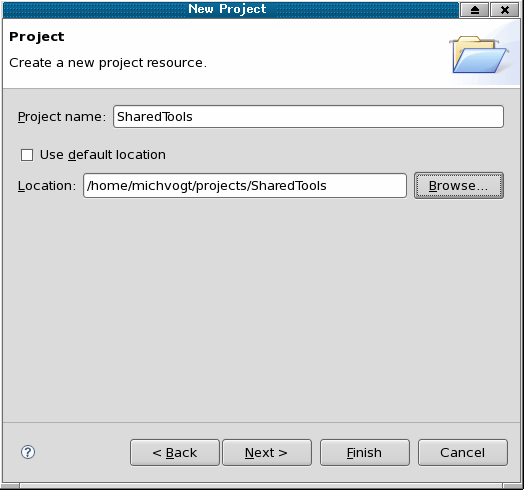
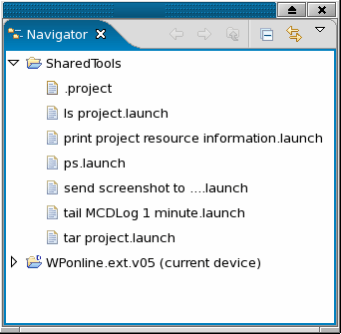

Sharing tool launch definitions (external tools)
To share external tools across several workspaces and with other users, organize the tools in a separate project. SmarTest's project concept allows other users to import this project into their workspaces. If they import the tools by reference, you can maintain the shared tools just in one place.
Shared Tools Project
To enable tool sharing, it is best practice to create a small project inside Eclipse and store the tool launch configurations inside. Follow these steps:
- Click to launch the New Project wizard.
- Select
- Assign a name for example, SharedTools).
- Clear Use default location
- Type a path where you want to store the project.
Make sure that the directory matches the name of the Project for example, /home/.../SharedTools).
Do not put it into a device or into another project, since projects in Eclipse should not be nested.
- Click Finish.

Now the project shows up in the Navigator view. To move launch configurations into the SharedTools project:
- Open the launch configuration.
- Select the Common tab.
- In the Save as section select Shared file.
- Browse for your SharedTools project.
Here you can also decide to add the tool launch configuration to the favorites menu.
Importing shared tools
Other users may now import the SharedTools project into their Eclipse Workspace.
- .
- Identify and Select the project root.
- Clear Copy projects into workspace.
This allows you to maintain only one shared version of the project.

Shared tools project on a Server
Even more sophisticated is placing a shared tools project on a common version control server for example, running subversion), and to import the project from there. See sections below on how to efficiently use subversion from inside SmarTest Work Center.
Functional changes
- Introduced before SmarTest 6.3.2